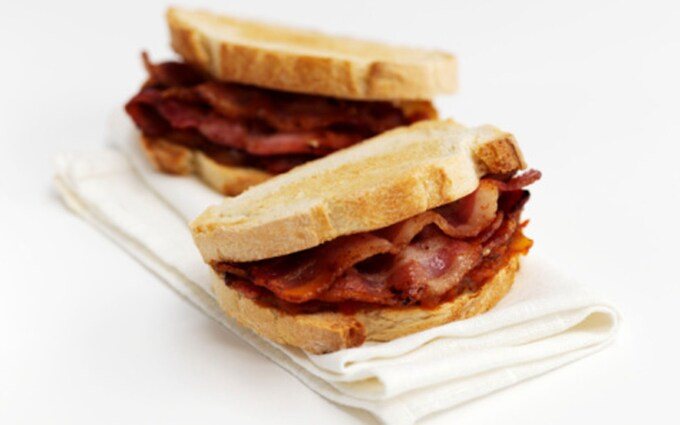

How to make an unbeatable Bacon Sandwich

Description
The bacon sandwich is the ultimate British breakfast.
Nothing beats crispy, smoky bacon on buttery light farmhouse bread with your choice of sauce.
Ingredients
- Farmhouse bread
- Butter
- Smoked back bacon
- Tomato ketchup or HP sauce
Step by step guide
- Take two slices of your farmhouse bread and butter them. You may also want to lightly toast them if you're feeling adventurous.
- Place 3-4 pieces of smoked back bacon into a dry non stick fying pan and crank up the gas.
- Cook the bacon until the fat is crisp and golden.
- Once cooked, place your bacon on top of your buttered farmhouse bread.
- Add a generous helping of your chosen sauce (Odin recommends ketchup or HP).
- Construct your sandwich and slice it in half.
Walah, you have a delicious bacon sandwich!